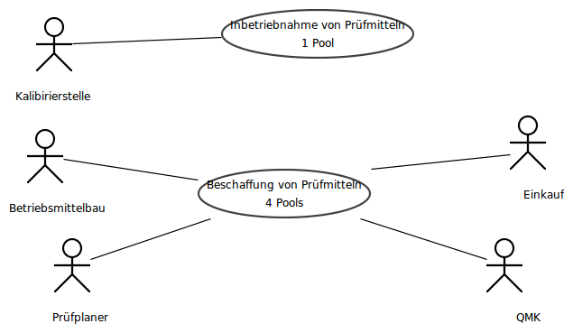

Pruefmittel
- Author: Tobias Küster
- Version: 0.1
- Created: Mon Apr 19 13:07:29 CEST 2010
- Modified: Mon Apr 19 13:07:29 CEST 2010
Beispiel-Diagramme für Textgenerierung

BusinessProcessSystem 'Pruefmittel'
Beschaffung von Prüfmitteln
 BusinessProcessDiagram 'Beschaffung von Prüfmitteln'
BusinessProcessDiagram 'Beschaffung von Prüfmitteln'
QMK
The Pool 'QMK' belongs to Participant 'QMK'.
The Process is of type private. In this Process, in Event 'Bestellunterlagen' a Message is received. Furthermore, the Task 'Bestellunterlagen prüfen' is conducted. Alongside, the normal flow and the exceptional flow are merged in the Gateway 'Anf. erfüllt?'. Aside from that, the Task 'Rücksprache, ggf. Modifikation' is performed. Besides, the normal flow and the exceptional flow are merged in the Gateway 'Genehmigung erf.?'. Aside from that, a number of elements are processed in sequence.
First, the Task 'Bestellunterlagen freigeben' is processed.
After that, the Task 'an Einkauf weiterleiten' is performed.
After that, the Task 'empfange Bestätigung' is performed.
Alongside, a number of elements are carried out in sequence.
First, in Event '
Konstr.unterlagen' a Message is received.
Hereupon, the Task '
Konstruktionsunterlagen prüfen' is processed.
Next, starting at the Gateway '
Anf. erfüllt?', one out of several branches will be carried out:
If the condition 'null' holds true, nothing happens.
If the condition 'null' holds true, the Task 'Rücksprache, ggf. Modifikation' is accomplished.
Hereupon, the Task '
Konstruktionsunterlagen freigeben' is carried out.
Hereafter, the Task '
an Prüfplaner weiterleiten' is carried out.
After that, the Task '
empfange PM und Dokumentation' is processed.
First, the Task 'Aufnahme in PMÜ' is performed.
Hereupon, nothing special happens.
Prüfplaner
The Pool 'Prüfplaner' belongs to Participant 'Prüfplaner'.
The Process is of type private. In this Process, a number of elements are carried out in sequence.
First, one out of several branches will be carried out depending on the evaluation of a complex condition .
First, a number of elements are processed in sequence.
First, in Event '
Bedarf Sonder-PM' the Process waits until a Rule applies.
Afterwards, the Task '
Lastenheft erstellen' is conducted.
Thereafter, starting at the Gateway '
interne Fertigung?', one out of several branches will be carried out:
If the condition '
null' holds true, a number of elements are accomplished in sequence.
First, the Task 'Bestellunterlagen mit Lastenheft erstellen und freigeben' is performed.
Afterwards, the Task 'Bestellunterlagen an QMK weiterleiten' is conducted.
If the condition '
null' holds true, a number of elements are conducted in sequence.
First, the Task 'Entwicklung des Sonder-PMs, Erstellung Pflichtenheft' is conducted.
Next, the Task 'Konstruktionsunterlagen an QMK weiterleiten' is executed.
Afterwards, the Task 'empfange Freigabe' is processed.
Next, the Task 'Werkstattauftrag erstellen' is executed.
More over, a number of elements are performed in sequence.
First, in Event 'Bedarf Standard-PM' the Process waits until a Rule applies.
After that, the Task 'Prüfmittelbeschaffungs- spezifikation erstellen und freigeben' is accomplished.
Afterwards, the Task 'Bestellunterlagen an QMK weiterleiten' is conducted.
Following that, nothing special happens.
Betriebsmittelbau
The Pool 'Betriebsmittelbau' belongs to Participant 'Betriebsmittelbau'.
The Process is of type private. In this Process, a number of elements are carried out in sequence.
First, in Event 'Auftrag' a Message is received.
Hereupon, the Task 'Prüfmittel gemäß Vorgabe herstellen' is executed.
Hereupon, the Task 'Abnahmeprüfung durchführen, Erstellung Kalibrierungsprotokoll' is conducted.
Next, the Task 'Prüfmittel und Dokumentation an QMK übergeben' is performed.
After that, nothing special happens.
Einkauf
The Pool 'Einkauf' belongs to Participant 'Einkauf'.
The Process is of type private. In this Process, a number of elements are executed in sequence.
First, in Event '
Bestellunterlagen' a Message is received.
Afterwards, the Task '
Prüfen, ob Freigabe vorliegt' is conducted.
Following that, starting at the Gateway '
Freigabe?', one out of several branches will be processed:
If the condition '
null' holds true, a number of elements are processed in sequence.
First, the Task 'Weiterleiten an QMK' is accomplished.
Following that, nothing special happens.
If the condition '
null' holds true, a number of elements are accomplished in sequence.
First, the Task 'Bestellung auslösen' is accomplished.
Next, the Task 'Benachrichtige QMK' is accomplished.
Hereupon, nothing special happens.
Inbetriebnahme von Prüfmitteln
 BusinessProcessDiagram 'Inbetriebnahme von Prüfmitteln'
BusinessProcessDiagram 'Inbetriebnahme von Prüfmitteln'
Kalibirierstelle
The Pool 'Kalibirierstelle' belongs to Participant 'Kalibirierstelle'.
The Process is of type private. In this Process, the normal flow and the exceptional flow are merged in the Gateway 'gült. Kalib.zeugn.?'. Besides, in Event 'Bedarf für Kalib.' the Process waits until a Rule applies. Besides, the normal flow and the exceptional flow are merged in the Gateway 'Erstkalibrierung?'. In addition, the Task 'Zyklusstart in SAP-Wartungsplan eintragen' is executed. In addition, a number of elements are processed in sequence.
First, the Task 'Kalibrierprüfung in SAP auslösen' is carried out.
After that, the Task 'Kalibrierprüfung durchführen' is performed.
In addition, a number of elements are accomplished in sequence.
First, the Task 'Kennzeichnung mit Kalibrierlabel' is processed.
Hereafter, the Task 'Prüfmittel an Fachabteilung übergeben' is executed.
Hereupon, nothing special happens.
Alongside, the normal flow and the exceptional flow are merged in the Gateway '__INITIAL_GATEWAY____SPLIT__'. In addition, a number of elements are accomplished in sequence.
First, one out of several branches will be accomplished depending on the evaluation of a complex condition .
First, in Event 'Prüfmittel angeliefert' a Message is received.
Aside from that, in Event 'Best.unterl. vorh.' the Process waits until a Rule applies.
Thereafter, the Task '
Sichtprüfung' is executed.
Afterwards, the Task '
Stammdatensatz in SAP anlegen' is processed.
After that, the Task '
PM mit ID-Labels kennzeichnen' is carried out.
Hereupon, starting at the Gateway '
ex. Wartungsanw.?', one out of several branches will be conducted:
If the condition 'null' holds true, the Task 'Anleitung erstellen' is carried out.
If the condition 'null' holds true, nothing happens.
Hereafter, the Task '
Wartungsplan in SAP erstellen' is carried out.
Next, the Task '
aus gültges Kalibrierzeugnis prüfen' is executed.